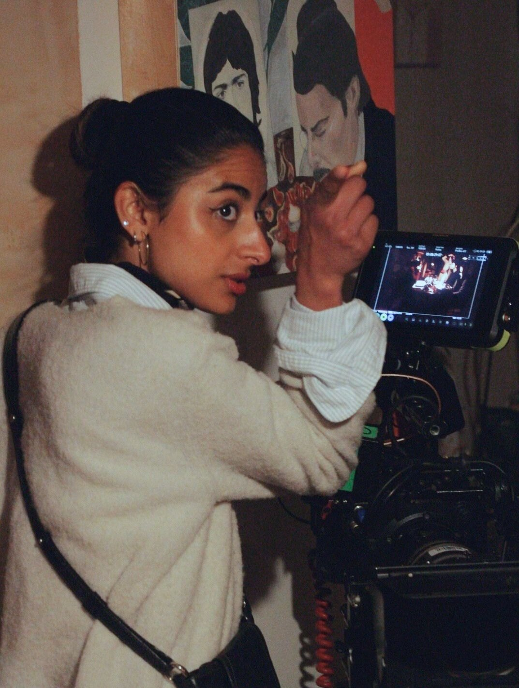
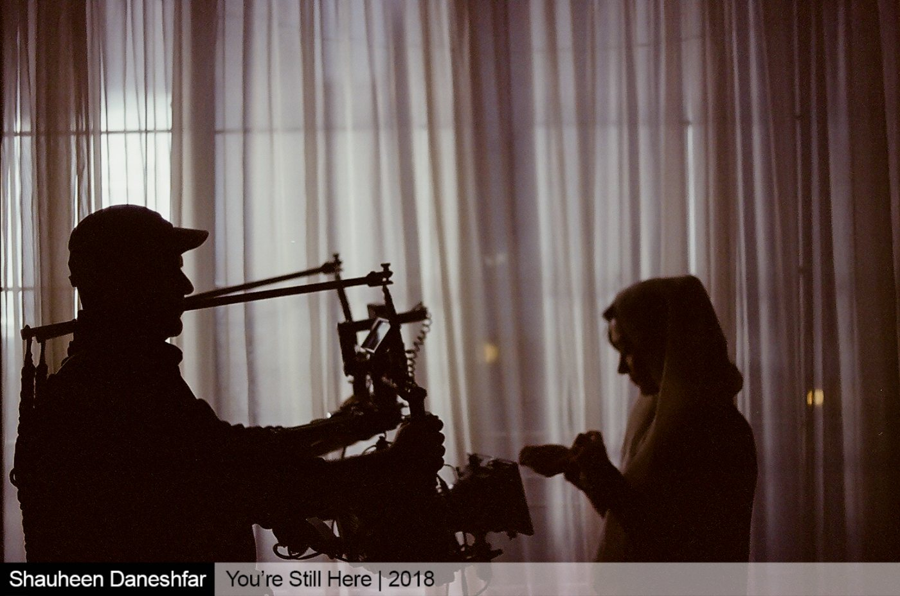
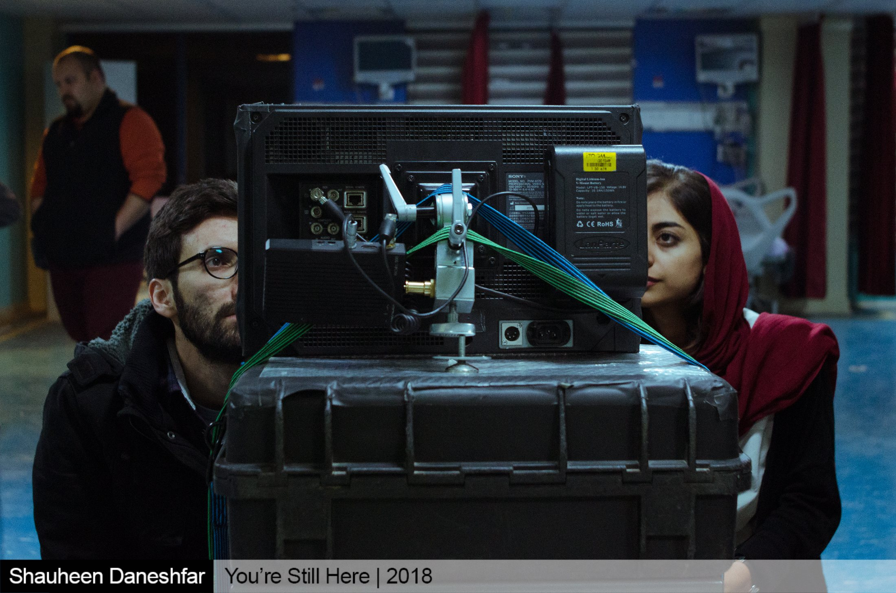
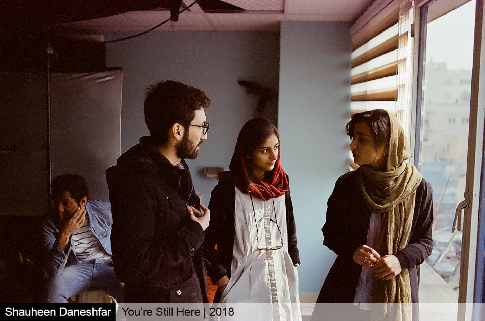
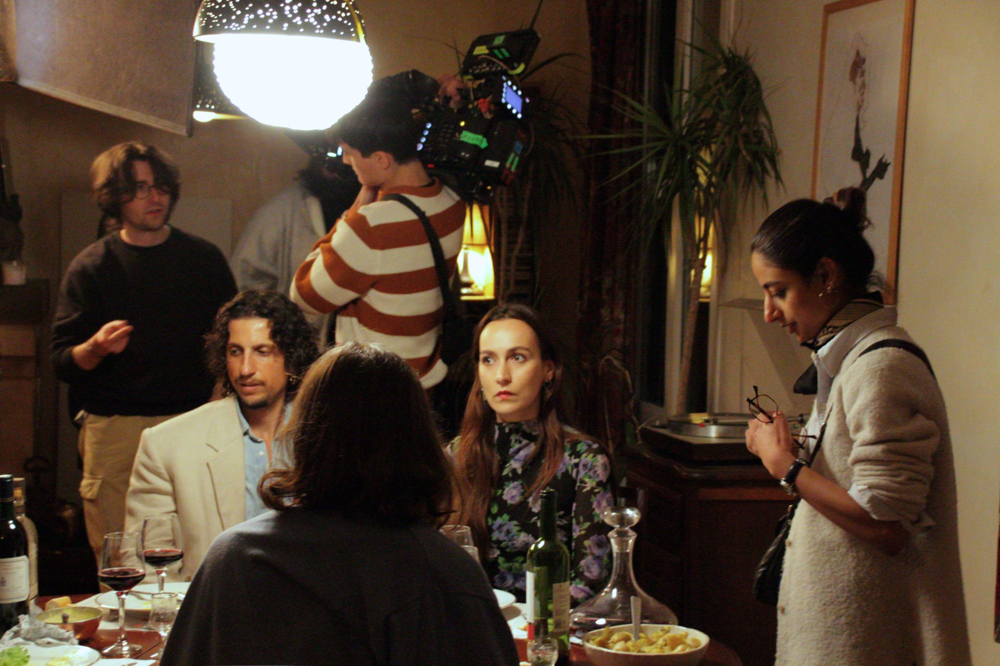
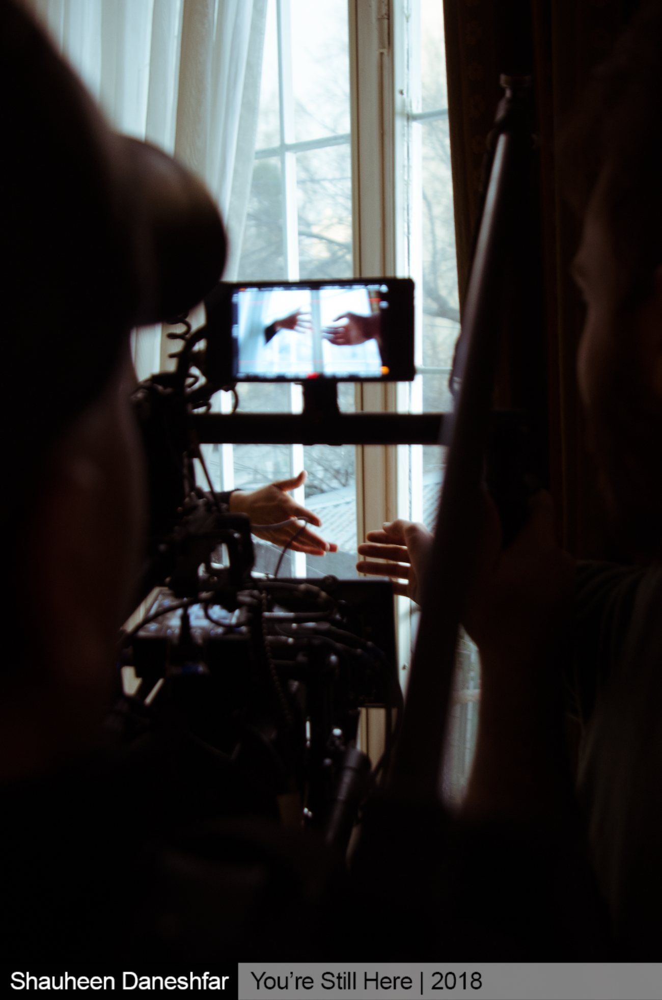

Selected Films

On set · La Chasse, Paris 2026
About
Katayoun Parmar is an Iranian director based in Paris, working between Tehran and France in a quiet, observational register.
She studied cinema and audiovisual arts at Master 2 level at Université Paris 1 Panthéon-Sorbonne, after a bachelor's at the University of Art in Tehran. She has directed six short films selected in more than fifty international festivals, and collaborated with MK2 Curiosity on one of her projects. In 2025 she founded the production studio Sibling Story in Tehran with her brother, Keyvan Parmar.
Craft
- Directing
- Screenwriting
- Editing
- Cinematography
- Photography & Videography
Also
- Set Decorator — Soulless (2023)
- Selection committee — Tehran Int'l Short Film Festival (2021)
- Cinema teacher — Manzoumeh Kherad Institute (2018—2022)
- Member — Iranian Short Film Association (ISFA)
Education
MA Cinema & Audiovisual — Paris 1 Panthéon-Sorbonne, 2024—26
BA Cinema — University of Art, Tehran, 2014—18
Languages
Persian · French · English
Recognition
50+ festivals worldwide
Awards
Best Narrative Short
Special Grand Prize
Best Cinematography
Best Editing
Young Talent Award
Best Short Film
Selected Festivals
- Mill Valley Film Festival
- Newport Beach Film Festival
- Women Make Waves Int'l Film Festival
- Tehran Int'l Short Film Festival
- Canberra Short Film Festival
- National Film Festival for Talented Youth
The Studio · Est. 2025
Sibling
Story
A production studio founded in Tehran in 2025 with her brother, Keyvan Parmar — a home for the films the two of them want to make, and the filmmakers they want to make them with.

Behind the Scenes



